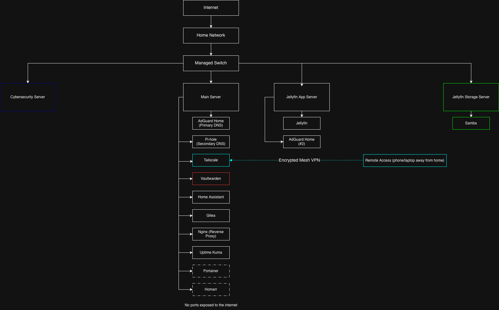
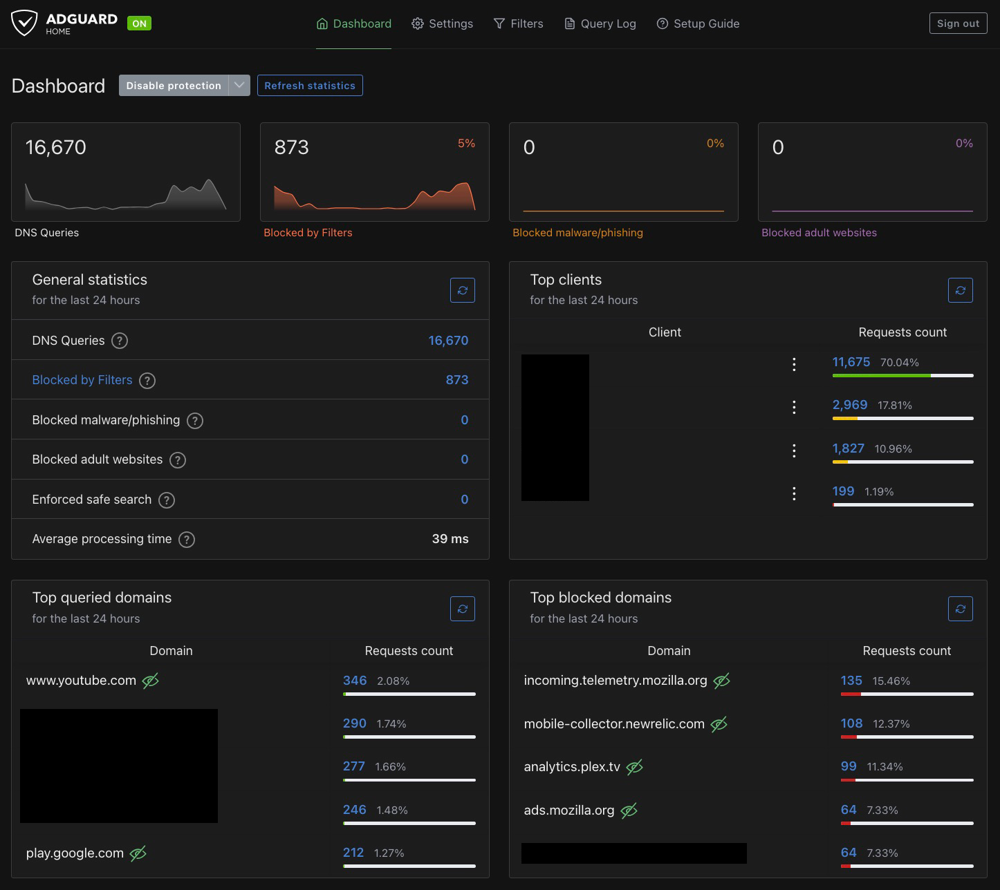
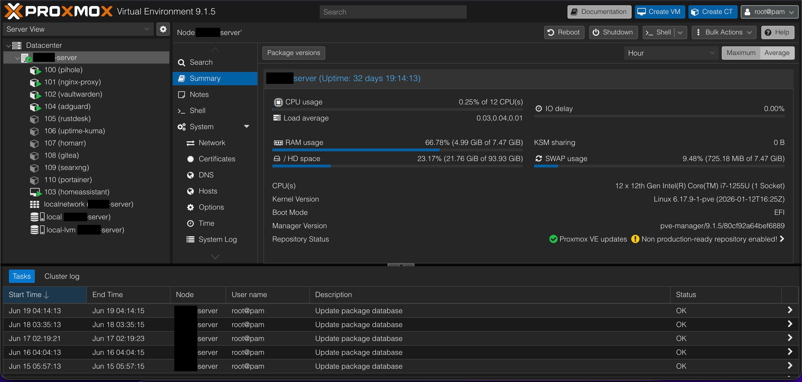

Introduction
My cybersecurity lab gets most of the attention, but underneath it is a separate home lab that runs the day-to-day stuff: DNS filtering, remote access, media, password management, smart home automation, and a growing pile of self-hosted services. The goal was to build a private, self-hosted environment where I actually own and control my own services instead of renting them from someone else's cloud. It's a constant work in progress and it changes pretty often.
Everything runs on Proxmox across a couple of machines, with services split across VMs and containers. All told it's handling DNS filtering, a mesh VPN for remote access, self-hosted media, a password vault, smart home automation, self-hosted git, a reverse proxy, and uptime monitoring. This is a walkthrough of what's running, how the pieces fit together, and the decisions I made to keep it secure.
Hardware
Nothing purpose-built, which is part of the fun. The main server is currently a gaming laptop (a migration to dedicated hardware is on the list), and a ThinkSystem server plus a second laptop handle Jellyfin, since that box has a CPU that supports hardware transcoding. Proxmox is the hypervisor across the board, storage is a mix of SSD and HDD, and the whole thing runs on my local network with remote access handled through Tailscale.

The Services & How I Use Them
Tailscale - Secure Remote Access
Tailscale builds a private, encrypted mesh VPN so I can reach my home services from anywhere without exposing a single port to the internet. I use it for remote SSH into the servers and for getting to things like Home Assistant and Jellyfin when I'm away from the house, and it handles NAT traversal with basically no configuration. This is the piece that lets everything else stay locked down, since nothing has to be public-facing for me to use it remotely.
AdGuard Home - Primary DNS Filtering
AdGuard Home is my main DNS now. It acts as a network-wide sinkhole, blocking ads, trackers, and known-malicious domains before they ever load, with encrypted DNS upstream (DoH/DoT) and custom filter lists. It's the DNS resolver for my home devices, and the query logs give me solid visibility into what's actually talking on the network. The encrypted upstream and deeper filtering options are what eventually won me over and made it the one I lean on.

Pi-hole - Secondary DNS
Pi-hole was where I started, and it's still running as a secondary resolver, though honestly I barely touch it these days now that AdGuard is doing the heavy lifting. It does the same core job as a DNS sinkhole, and keeping it around gives me a fallback and an easy way to compare filtering behavior between the two. It's a good example of how a lab evolves over time, where the thing you start with isn't always the thing you end up relying on.
Vaultwarden - Self-Hosted Password Manager
Vaultwarden is a lightweight, open-source, self-hosted Bitwarden server that holds my passwords, 2FA codes, and encrypted vault data. It lives entirely on my own server, syncs across all my devices, and is only reachable remotely through Tailscale, so my password vault is never exposed to the public internet. It uses TLS and end-to-end encryption, so even though I host it myself, the vault contents stay encrypted. This is the one I'm most particular about, since it's the keys to everything.
Home Assistant - Smart Home Automation
Home Assistant runs my smart home locally instead of leaning on a bunch of vendor clouds. I use it for device dashboards and automations (lights, sensors, routines), and keeping it local means my home automation keeps working and stays private even if the internet drops. It's also been a good hands-on lesson in IoT security and local-first design, since smart home gear is notoriously sketchy about phoning home.
Jellyfin - Self-Hosted Media
Jellyfin is my self-hosted media server, streaming my library to TVs, tablets, and phones, and reachable remotely through Tailscale. I deployed it with Docker, and it runs on the box with hardware transcoding so it can actually keep up. It's a solid demonstration of self-hosting, storage management, and getting containerized services configured and talking to each other.
Gitea - Self-Hosted Git
Gitea is a lightweight, self-hosted Git service where I keep some of my own code and configs. It gives me a private place to version-control things without pushing everything up to a public host, which is handy for the stuff that's just mine or still half-finished.
Nginx - Reverse Proxy
Nginx sits in front of my services as a reverse proxy, giving them clean internal hostnames and handling TLS instead of me juggling a pile of IP addresses and port numbers. It's the piece that makes the rest of the lab feel less like a tangle and more like an actual set of named services.
Uptime Kuma - Monitoring
Uptime Kuma keeps an eye on my services and tells me when something goes down. It's a simple, clean status dashboard that means I find out a service died because Uptime Kuma told me, not because I went to use it and it wasn't there.
Portainer & Homarr (In Progress)
Two I've stood up recently but haven't fully built out yet. Portainer gives me a UI for managing my Docker containers, and Homarr is meant to become a single dashboard pulling all my services into one place. Both are early days, but they're next on the list as the number of services keeps growing.

Security Practices
Self-hosting only makes sense if it's done securely, so the lab is built around keeping things private and closed off:
- No ports exposed to the internet
- Remote access only through Tailscale
- Encrypted DNS (DoH/DoT) on the upstream resolvers
- AdGuard (with Pi-hole as a backup) filtering malicious domains network-wide
- Proxmox backups and snapshots before changes
- Strong passwords and 2FA on the services that support it
What I Learned
Running this has taught me a lot of the practical sysadmin side of things:
- Managing multiple services across different servers
- DNS filtering with blocklists, allowlists, and logging
- Mesh VPN networking concepts
- Home automation and IoT device security
- Self-hosting and storage management
- Container and VM management in Proxmox and Docker
- Tying services together cleanly with a reverse proxy and monitoring
Future Improvements
The list never really gets shorter, but a few things on deck:
- Consolidate Jellyfin onto one box with a hardware-accelerated GPU
- Add Grafana and Prometheus for proper dashboards and metrics
- Add Unbound for recursive DNS
- Build out the Homarr dashboard and lean harder on Portainer
- Keep expanding the smart home automations and self-hosted services